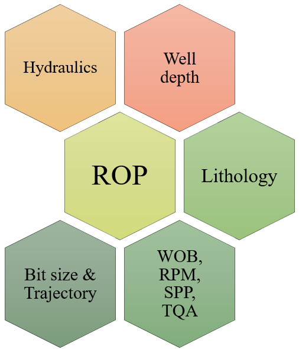

ROP depends on several interrelated and unrelated variables.
The results of ROP calculation with a mathematical equation are not reliable.
However, ROP prediction can be done with ML models. The common models used for prediction of ROP are
By simulation studies, least time to drill a well section by a particular type of bit can be computed prior to drilling the section, by maintaining a predefined values of drilling variables such as WOB, RPM, SPP , TQA and hydraulic variables such as Mud weight, PV, YP and gel strength.
